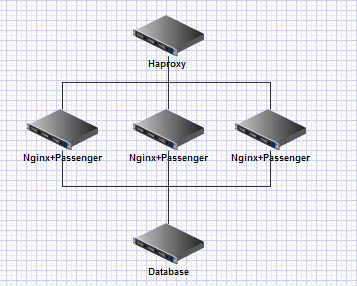
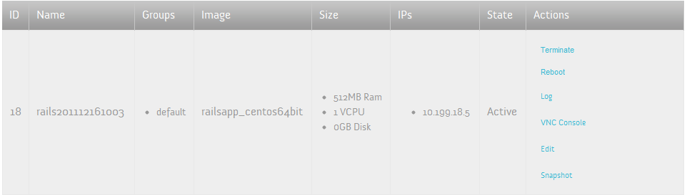
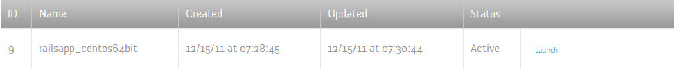
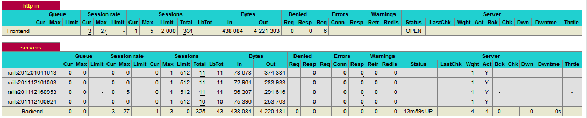

可扩展的架构 Haproxy + Nginx
|  |
frontend http-in
bind *:80
default_backend servers
backend servers
stats uri /admin?stats
balance roundrobin
server server1 10.199.18.11:80 maxconn 512
server server2 10.199.18.12:80 maxconn 512
server server3 10.199.18.13:80 maxconn 512
|
创建instance，安装好nginx以及应用
对这个instance作一次snapshot

require 'rubygems'
require 'openstack/compute'
auth_url = 'http://10.199.21.210:5000/v2.0/' #OpenStack keystone auth url
image_id = '9'
flavor_id = '1'
cs = OpenStack::Compute::Connection.new(:username => 'username', :api_key => 'password', :auth_url => auth_url)
image = cs.get_image(image_id)
flavor = cs.get_flavor(flavor_id)
newserver = cs.create_server(:name => "rails#{Time.now.strftime("%Y%m%d%H%M")}", :imageRef => image.id, :flavorRef => flavor.id)
p "New Server #{newserver.name} created"
while newserver.progress < 100
p "Server status #{newserver.status}, progress #{newserver.progress}"
sleep 10
newserver.refresh
end
p "Server status #{newserver.status}, progress #{newserver.progress}"
p "Done"
# ruby create_new_server.rb
"New Server rails201112161042 created"
"Server status BUILD, progress 0"
"Server status ACTIVE, progress 100"
"Done"
差不多30秒左右的时间，这台虚拟机就创建好了，我们可以在dashboard看到这台最新的instance。
cs = OpenStack::Compute::Connection.new(:username => 'username', :api_key => 'password', :auth_url => auth_url)
#预先定义一个haproxy template文件，backed server集群部分定义留空，将它拷贝过来
`cp haproxy.cfg.template haproxy.cfg`
File.open('haproxy.cfg', 'a') do |f|
cs.servers.each do |s|
server = cs.server(s[:id])
#如果该实例的镜像等于我们之前做的snapshot，将它的IP加入配置文件
if server.image['id'] == image_id
ip = server.addresses.first.address
p "Found matched server #{server.name} #{ip}, add to haproxy"
f.puts " server #{server.name} #{ip}:80 maxconn 512"
end
end
end
#覆盖旧的haproxy配置文件，reload haproxy
`cp haproxy.cfg /etc/haproxy.cfg`
p "Reload haproxy"
`/etc/init.d/haproxy reload`
# ruby update_haproxy.rb
"Found matched server rails201112161042 10.199.18.6, add to haproxy"
"Found matched server rails201112161003 10.199.18.5, add to haproxy"
"Found matched server rails201112160953 10.199.18.4, add to haproxy"
"Found matched server rails201112160924 10.199.18.8, add to haproxy"
"Reload haproxy"
Haproxy Statistics

avg_session_num = current_sessions / current_instances
if avg_session_num > 800
add_new_server
update_ha_proxy
elsif avg_session_num < 100
terminate_server
update_ha_proxy
end
avg_session_num = current_sessions / current_instances
if avg_session_num > 800
add_new_server
update_ha_proxy
elsif avg_session_num < 100
terminate_server
update_ha_proxy
end